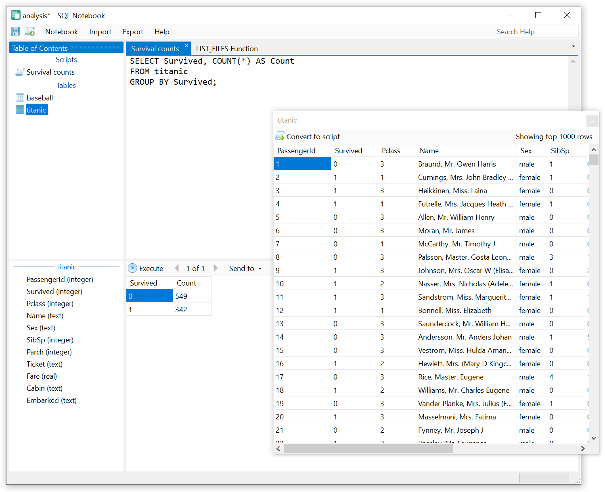

SQL Notebook is a free Windows app for exploring and manipulating tabular data. It is powered by a supercharged SQLite engine, supporting both standard SQL queries and SQL Notebook-specific commands. Everything you need to answer analysis questions about your data, regardless of its format or origin, is built into SQL Notebook.

CSV, JSON, and Excel files can be imported into the notebook as
local SQLite tables. A graphical import wizard and IMPORT script commands are both available.
Microsoft SQL Server, PostgreSQL, and MySQL tables can be linked into the notebook and queried interchangeably with local tables. Remote data is not physically copied into the notebook file unless requested; instead, the data source is queried on-the-fly.
Tables and scripts can be exported in CSV format.
Enter SQL commands interactively and press F5 to execute. Invoke sub-scripts using `EXECUTE` and pass parameters using `DECLARE PARAMETER`. Any combination of data sources can be used together in the same SQL query, including cross-file, cross-database, and cross-server queries.
Users with prior SQL or other programming language experience will feel right at home in SQL Notebook. All common programming constructs from other programming languages are available, in addition to standard SQLite queries and commands.
Learn more in the documentation:
DECLARE, SET)IF/ELSE, FOR,
WHILE)THROW, TRY/CATCH)EXECUTE)SQL Notebook is a "batteries included" solution to everyday data analysis needs. A wide variety of functionality is immediately available out of the box.
Learn more in the documentation:
IMPORT CSV,
IMPORT XLS, EXPORT TXT)LIST_FILES,
READ_CSV, READ_FILE,
DOWNLOAD)DATEPART,
DATEADD, DATEDIFF,
GETDATE)ARRAY, ARRAY_COUNT,
ARRAY_GET, ARRAY_SET)A fully searchable in-application help system is ready to answer your questions. Press F1 to view the index of help documents, or enter a keyword into the "Search Help" box in the upper-right corner of the SQL Notebook window. Both SQLite and SQL Notebook documentation is included. Every available statement and function is documented. The documentation is also available online.
SQL Notebook is free and open source software available under the popular MIT license.